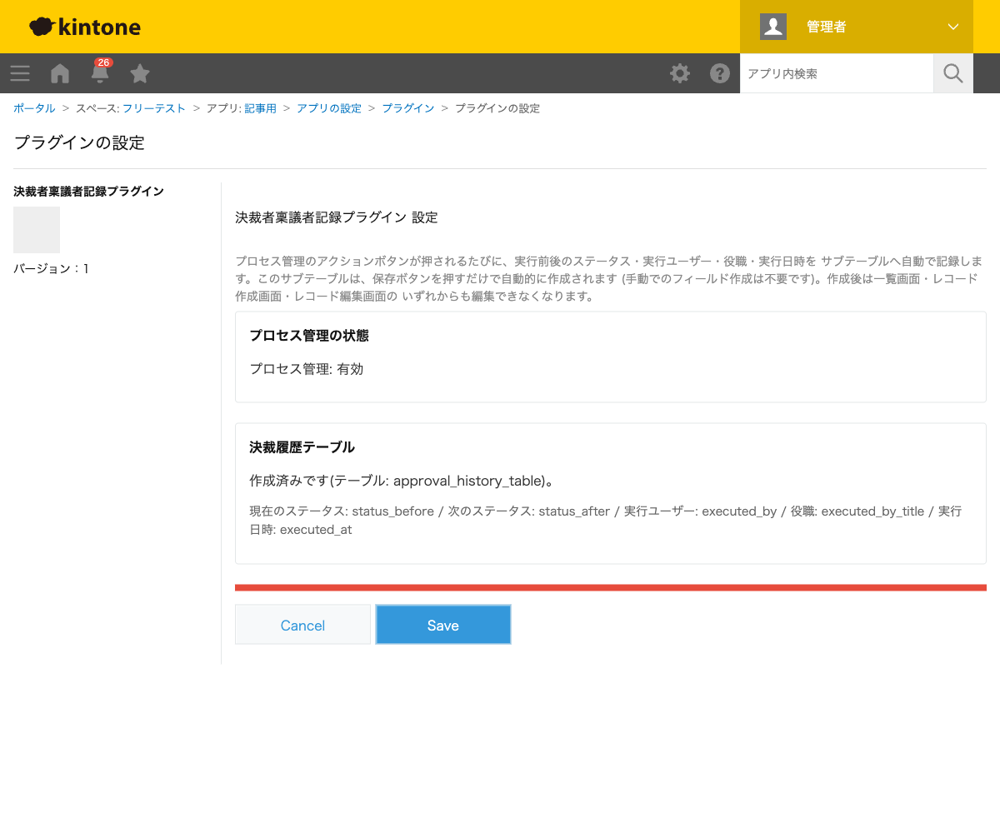
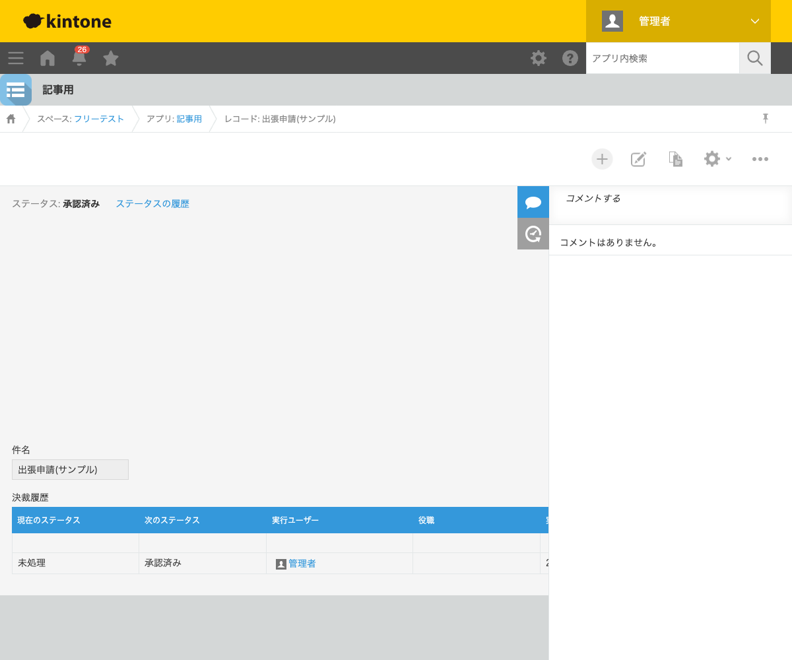

GovAppsプラグイン 安全性を確認できる無料kintoneプラグイン集
プロセス管理で承認フローを組んでも、「誰が」「いつ」「どのステータスからどのステータスへ」 承認したかという履歴は標準機能では残りません。この記事では、プロセス管理のアクション実行を 自動的にサブテーブルへ記録する方法を、実際に承認操作を行った結果つきで解説します。
kintone標準のプロセス管理には「ステータスの履歴」というリンクがあり、簡易的な変更履歴を 確認できますが、レコード内のデータとして扱うことはできません。一覧画面での絞り込みや、 グラフでの集計、CSV出力に含めるといった使い方をするには、履歴をレコード自体のフィールド (サブテーブル)として持たせる必要があります。
| 方法 | 向いている場合 | 注意点 |
|---|---|---|
| JavaScriptを自作する | 社内に開発者がいて、記録項目をカスタマイズしたい場合 | プロセスアクションのイベントフック・サブテーブルへの追記処理を自前で実装・保守する必要がある |
| 有料の他社プラグイン | 予算があり、サポートを重視する場合 | 月額課金が発生する。ソースコードが非公開で記録項目を確認しにくい |
| GovAppsプラグイン(このプラグイン) | 無料で、決裁履歴をすぐに残したい場合 | 記録項目(実行前後のステータス・実行ユーザー・役職・実行日時)は固定で、カスタマイズはできない |
決裁者稟議者記録プラグインは無料・広告なしで、 ソースコードをGitHubで全公開 しています。記録処理はブラウザ内のJavaScriptとkintone標準のフィールド追加APIだけで完結し、 外部サーバーへの通信は一切ありません。
決裁者稟議者記録プラグインは、プロセス管理が有効な アプリで設定画面の「保存」を押すだけで使えます。

「出張申請(サンプル)」というレコードを作成し(初期ステータス: 未処理)、プロセスアクション 「承認する」を実行すると、決裁履歴テーブルに「未処理→承認済み」「実行ユーザー: 管理者」という行が自動的に追記されます。利用者は通常どおり承認操作をするだけで、 記録のための追加作業は必要ありません。
